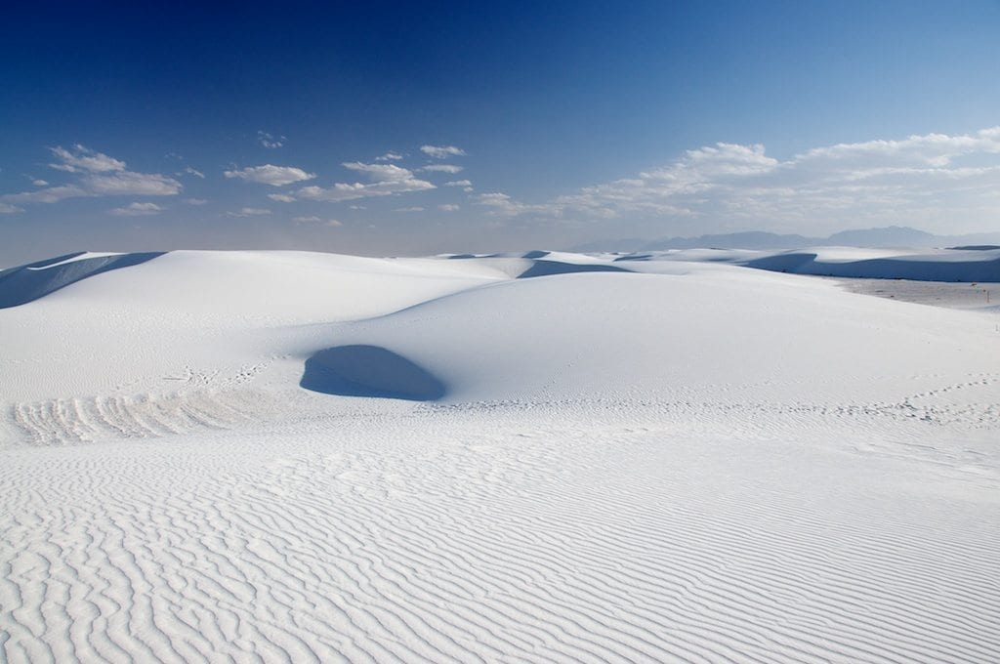
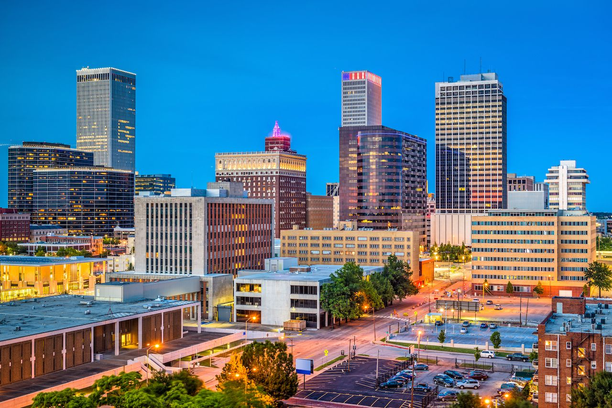

Alamogordo, NM
I was born and raised in Alamogordo, NM. My Grandfather was in the military and was stationed at Holloman AFB. My mother the youngest of four children was the only one born in Alamogordo. A small town with the population of about 30,000 people, it was a great place to grow up. There are some really beautiful things to see there like the White Sands National Park, Space Hall of Fame, The Missle Range, and Carlsbad Caverns. I left to college within weeks of graduation high school, I can still appreciate and miss the little things about home, especially the food.

White Sands National ParkTulsa, OK
Left home and moved to Tulsa to go to college. I attended the University of Tulsa and played on the basketball team as well. Tulsa was a great transition city with about 400,000 people and the privateuniversity with just over 3,000 students, but just big enough to compete in Division I athletics. Tulsa was an easy city to navigate, although not very walkable. The City and University have both grown and changed alot since I lived there.

Downtown TulsaWoodbridge, VA
Moved to Virginia ‑DMV‑ to get a change of scenery from Tulsa and my aunt was gracious enough to let me stay with her. Boy was it a big change, that I needed and embraced. I had to learn quickly to navigate traffic and public transportation to and from DC and into Maryland.Dealing with the traffic was exhausting and evenutally I moved into Alexandria Virginia which was closer to D.C. and had a metro stop very close to my place. I enjoyed all of the museums and events I was able to enjoy while living the "big" city life.
St. Louis, MO
Accepted a promotion with my company which brought me to St. Louis. Since moving here, have only lived in the City. St. Louis is a very interesting city with the set up of the municipalities and the suburbs. Suprisingly, there is some really good food here and the city is very family friendly.